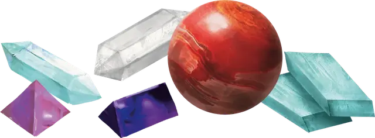

Камень Йоун
Ioun Stone
Чудесный предмет, редкость варьируется (редкий, очень редкий, легендарный, требуется настройка)

Камень Йоун назван в честь богини знаний и пророчеств, почитаемой в нескольких мирах. Существует много разновидностей камней Йоун, все они отличаются по форме и цвету.
Если вы действием подбрасываете один из этих камней в воздух, он начинает вращаться вокруг вашей головы на расстоянии 1к3 футов, предоставляя вам постоянное преимущество. Впоследствии другое существо может действием схватить руками или чем-то иным камень, забирая его себе, если совершит успешный бросок атаки по КД 24 или совершит успешную проверку Ловкости (Акробатика) Сл 24. Вы сами можете действием схватить и убрать камень, оканчивая его эффект.
У камня КД 24, 10 хитов и сопротивление ко всем видам урона. Пока он вращается вокруг вашей головы, он считается носимым.
Сортировка:
- По редкости
- По названию
Источники:
- DMG
- LLK
- IMR
Большое поглощение (легендарный). Пока этот эллипсоид с зелёными и лавандовыми прожилками вращается вокруг вашей головы, вы можете реакцией отменить заклинание с уровнем не больше 8, наложенное видимым вами существом и нацеленное только на вас.
Если вы становитесь целью заклинания, чей уровень настолько большой, что камень не может поглотить его целиком, это заклинание нельзя отменить. Как только камень отменит 50 уровней заклинаний, он выгорит и станет тускло-серым, потеряв всю магию.
Восприятие (редкий). Пока этот тёмно-синий ромбоид вращается вокруг вашей головы, вы не можете быть захвачены врасплох.
Защита (редкий). Пока эта серо-розовая призма вращается вокруг вашей головы, вы получаете бонус +1 к КД.
Лидерство (очень редкий). Пока эта сфера с розовыми и зелёными прожилками вращается вокруг вашей головы, ваше значение Харизмы увеличивается на 2, с максимумом 20.
Мастерство (легендарный). Пока эта бледно-зелёная призма вращается вокруг вашей головы, ваш бонус мастерства увеличивается на 1.
Питание (редкий). Пока этот прозрачный веретенообразный камень вращается вокруг вашей головы, вам не нужно ни есть, ни пить.
Поглощение (очень редкий). Пока этот бледно-лавандовый эллипсоид вращается вокруг вашей головы, вы можете реакцией отменить заклинание с уровнем не больше 4-го, наложенное видимым вами существом и нацеленное только на вас.
Если вы становитесь целью заклинания, чей уровень настолько большой, что камень не может поглотить его целиком, это заклинание нельзя отменить. Как только камень отменит 20 уровней заклинаний, он выгорит и станет тускло-серым, потеряв всю магию.
Проворство (очень редкий). Пока эта тёмно-красная сфера вращается вокруг вашей головы, ваше значение Ловкости увеличивается на 2, с максимумом 20.
Проницательность (очень редкий). Пока эта ярко-синяя сфера вращается вокруг вашей головы, ваше значение Мудрости увеличивается на 2, с максимумом 20.
Рассудок (очень редкий). Пока эта сфера с алыми и синими прожилками вращается вокруг вашей головы, ваше значение Интеллекта увеличивается на 2, с максимумом 20.
Регенерация (легендарный). Вы восстанавливаете 15 хитов в конце каждого часа, в течение которого этот жемчужно-белый веретенообразный камень вращается вокруг вашей головы, при условии, что у вас есть как минимум 1 хит.
Резерв (редкий). Эта ярко-фиолетовая призма хранит заклинания, наложенные в неё, пока вы не используете их. Этот камень может хранить до 3-х уровней заклинаний одновременно. Когда его находят, он хранит 1к4 - 1 уровень заклинаний, выбранных Мастером.
Любое существо может заложить в камень заклинание с уровнем от 1-го до 3-го, касаясь его при накладывании. Заклинание не вступает в силу, а просто помещается в камень. Если камень не может уместить заклинание, заклинание тратится безо всякого эффекта. Занимаемое число уровней определяется уровнем, с которым заклинание было наложено.
Пока этот камень вращается вокруг вашей головы, вы можете наложить заклинание, хранящееся в нём. Заклинание использует уровень ячейки, Сл спасброска, бонус атаки заклинанием и базовую характеристику исходного заклинателя, но во всём остальном считается, что заклинание наложили вы. Наложенное заклинание перестаёт храниться в камне, освобождая пространство.
Сила (очень редкий). Пока этот бледно синий ромбоид вращается вокруг вашей головы, ваше значение Силы увеличивается на 2, с максимумом 20.
Стойкость (очень редкий). Пока этот розовый ромбоид вращается вокруг вашей головы, ваше значение Телосложения увеличивается на 2, с максимумом 20.
Живучесть (очень редкий) [IMR]. Пока эта сине-зелёная мраморная сфера вращается вокруг вашей головы, вы получаете бонус +1 к спасброскам от смерти.
Высший интеллект (редкий) [LLK]. Пока эта гранёная сфера вращается вокруг вашей головы, вы получаете бонус +1 к проверкам Интеллекта.
Знание истории (редкий) [LLK]. Пока эта стальная полированная сфера вращается вокруг вашей головы, вы получаете владение навыком История или бонус +1 к проверкам этого навыка, если уже владеете им.
Знание природы (редкий) [LLK]. Пока этот блестящий латунный камень вращается вокруг вашей головы, вы получаете владение навыком Природа или бонус +1 к проверкам этого навыка, если уже владеете им.
Знание религии (редкий) [LLK]. Пока этот крохотный золотистый самоцвет вращается вокруг вашей головы, вы получаете владение навыком Религия или бонус +1 к проверкам этого навыка, если уже владеете им.
Знание языков (редкий) [LLK]. Пока этот пульсирующий осколок красного драгоценного кристалла вращается вокруг вашей головы, вы владеете одним дополнительным языком. Мастер выбирает несомый камнем язык.
Самосохранение (редкий) [LLK]. Пока этот серебристый самоцвет вращается вокруг вашей головы, вы получаете бонус +1 к спасброскам Интеллекта.